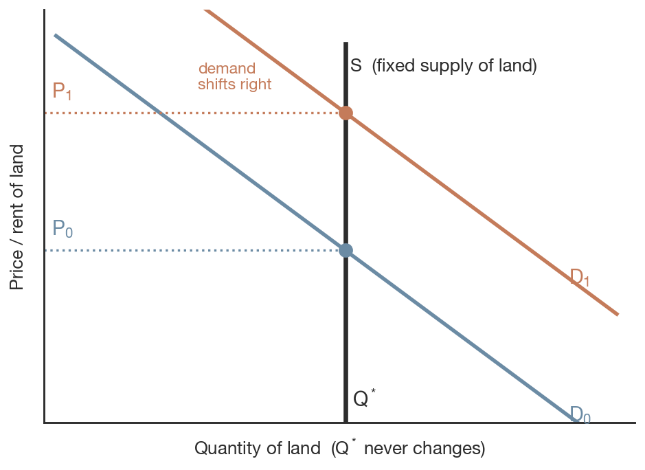
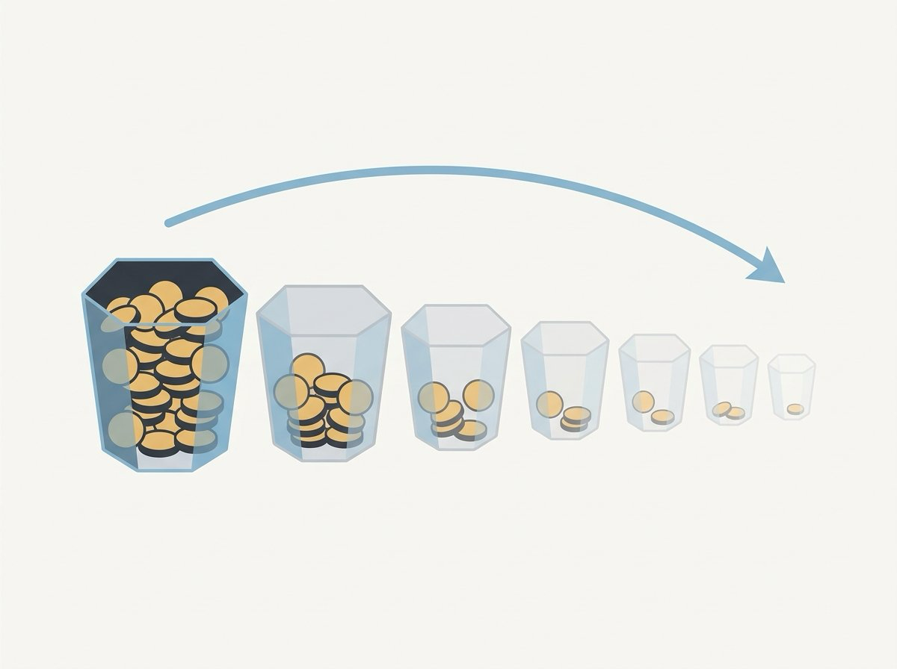
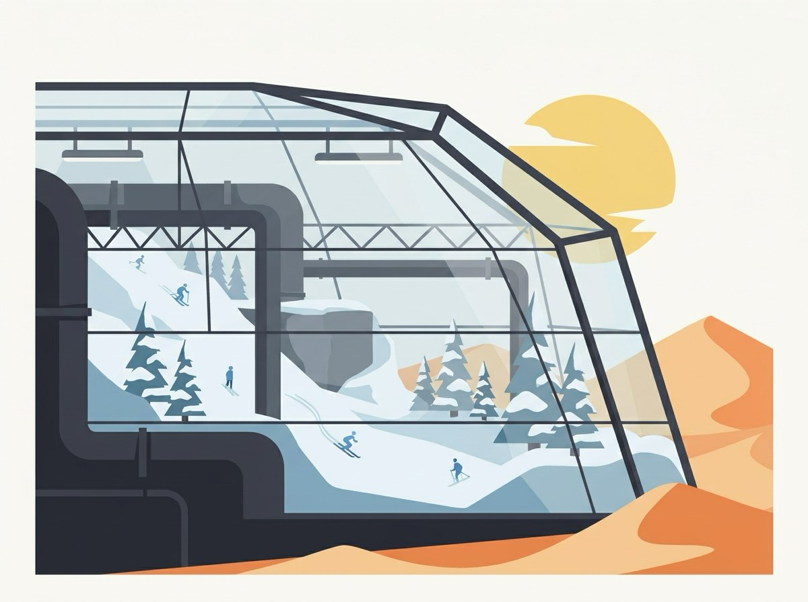

ECON 1116 • Principles of Microeconomics • Chapter 15
Capital, Land, and Factor Markets
Why does a barren parking lot in Manhattan sell for $30 million — and why would anyone hand $6 billion to a company that has never turned a profit?
Dr. Richeng Piao
Department of Economics
Northeastern University
Learning Objectives
15.1
Explain why land earns economic rent — and why a fixed supply makes price purely demand-determined
15.2
Use present value to decide whether a capital investment is worth making
15.3
Compare the five channels firms use to raise financial capital
15.4
Show how supply & demand for loanable funds set the interest rate — the price of capital
15.5
Describe the entrepreneur as the fourth factor and explain creative destruction
Quick Recall — Chapter 14
Last time we studied the labor market. A firm hires workers until the wage equals what? (Hint: three letters.)
Why is the demand for labor called a derived demand?
Labor is just one of the four factors of production. Can you name the other three?
Discuss with your neighbor — 90 seconds.
Hook — Three Strange Prices
$30M
A barren parking lot in midtown Manhattan, 2024. Not the lot — the land beneath it.
$20B
Amazon spent on warehouse robots, 2020–2025. Pay now, save labor for years.
$6B
A VC check to OpenAI, a company that had never earned a profit.
Three prices, one question all chapter: How do markets price the factors that aren’t labor?
Land · physical capital · financial capital · entrepreneurship
Section 1 · LO 15.1
Land and the Theory of Rent
David Ricardo, 1817 — a 200-year-old model that still prices Manhattan, Saudi oil, and Shohei Ohtani.
The Parable of Three Settlers
First settlers claim the best meadows (100 bushels). Land is abundant → they pay no rent.
As settlers arrive, every meadow is taken. Fatima can farm free scrubland (60 bushels) — or rent a meadow.
She’ll pay up to 100 − 60 = 40 bushels. Rent = the gap over the marginal land.
Rent = Productivity Gap Above the Marginal Land

The marginal land (scrubland, 60) is the least productive plot still in use. It sets the baseline.
Rent on any parcel = its productivity − the marginal land’s. Better land → bigger gap → higher rent.
Two Definitions to Lock In
Marginal land
The least productive land still in use. Its productivity is the baseline against which all other rents are measured.
Economic rent
Payment to a factor above the minimum needed to keep it in its current use. When supply is perfectly inelastic, the entire payment is economic rent.
Fixed Supply → a Vertical Supply Curve

You can’t manufacture more beachfront in Malibu. Supply is perfectly inelastic — a vertical line.
Price is set entirely by demand. Demand shifts right → price rises; quantity never moves.
Contrast: when coffee’s price rises, farmers plant more. Land can’t respond.
Common Misconception
“If land is fixed, how do you explain Dubai’s Palm Islands or Boston’s Back Bay?”
Reclamation is slow and astronomically expensive — Palm Jumeirah cost $12B over six years.
It creates land in one spot — it does not make another Times Square. Desirable locations stay fixed.
Back Bay was a tidal marsh filled with gravel in the 1800s. Once filled, the same vertical supply curve took hold — and rents have climbed ever since.
Economic Rent Is Everywhere
Any factor whose supply can’t expand to meet demand earns rent — not just dirt.
Manhattan land — 22.8 sq mi, unchanged since 1626. A parking lot sold for $30M; the price is pure rent.
Shohei Ohtani — $700M Dodgers deal vs ~$5M next-best. The ~$65M/yr gap is rent on a vertical talent supply.
cars.com — valued at $872M. There is exactly one. Entire value is economic rent.
A neurosurgeon — $800K, would stay for $200K. The $600K gap is rent on extreme scarcity of skill.
The more inelastic the supply, the larger the share of payment that is rent.
Why Firms Cluster: Agglomeration
Industrial agglomeration: related firms cluster, pushing local rents up — but the benefits outweigh the cost.
Marshall’s external economies of scale:
- A shared pool of specialized workers
- Dense networks of suppliers
- Rapid knowledge spillovers
Silicon Valley, Detroit autos, Hollywood, now Austin AI — the rent flows to whoever owns property in the right place.
OPEC and the Rent on Oil
Meadowland = Saudi crude
Cheap, easy to extract — sometimes under $10/barrel. Huge rent when world prices are high.
Scrubland = oil sands & deepwater
Feasible but expensive — over $50/barrel. Only profitable when prices are high.
OPEC restricts output — like banning farming on some grassland. It raises the price and the rent on its cheap “meadows.” Saudi rents fund ~60% of the government budget.
Ricardo in 2025: Medallions & Spectrum
NYC taxi medallions
Capped at a fixed number in 1937. As the city grew, prices hit $1.3M (2013). Pure rent on artificial scarcity.
Uber/Lyft entered without medallions — effectively expanding supply. Values crashed to $80K.
Radio spectrum
Genuinely fixed by physics. FCC auctions licenses; winning bids are rent on a natural resource.
T-Mobile paid $3.5B for spectrum in 2024. Like Manhattan, it can’t be manufactured.
A 200-year-old model still explaining markets Ricardo never imagined.
Your Turn — Spot the Economic Rent
A pop star earns $40M/year. Her next-best career — voice teacher — would pay $60K/year. Roughly how much of her income is economic rent?
Think Like an Economist
London’s Green Belt (1947) bans most development on a ring around the city — the equivalent of banning farming on the grassland.
Who benefits? Existing homeowners inside the boundary — their property values rise.
Who pays? Renters and first-time buyers facing artificially high prices.
A 200-year-old model lighting up a thoroughly modern policy debate.
Section 2 · LO 15.2
Physical Capital & the Investment Decision
When the costs come now but the benefits come later, you need one tool: present value.
From Hiring Workers to Buying Machines
Labor (Ch 14)
Hire until W = MRPL — the wage equals the worker’s marginal revenue product.
Capital (today)
Buy a machine if its MRPK — the extra revenue it generates — exceeds its cost.
One crucial difference: capital is paid for upfront, but pays off over many years. Investment is an intertemporal decision — spend now, earn later.
Present Value: Dollars Across Time
A dollar today beats a dollar next year — today’s dollar earns interest. At 5%, $1 → $1.05.
Present value of a future sum
\( PV = \dfrac{FV}{(1+r)^n} \)
Future money is worth less today — and the further off (or higher the rate r), the less it’s worth.

How Fast Future Dollars Shrink

At 5%, $1 in 30 years is still worth ~23¢.
At 20%, that same dollar is worth less than 0.5¢.
Higher interest rates punish the distant future — which is why rates govern long-horizon investment.
Worked Example: Amazon’s Robots
Spend $10M now on robots that save $3M/year for 5 years. Worth it at 5%?
| Year | Savings | ÷ (1.05)n | PV |
|---|---|---|---|
| 1 | $3.00M | 0.952 | $2.857M |
| 2 | $3.00M | 0.907 | $2.721M |
| 3 | $3.00M | 0.864 | $2.592M |
| 4 | $3.00M | 0.823 | $2.468M |
| 5 | $3.00M | 0.784 | $2.350M |
| Total PV of savings | $12.99M | ||
PV of savings $12.99M > cost $10M
Buy the robots. ✓
The Same Robots at Higher Rates
| Interest rate | Total PV of savings | Profitable? |
|---|---|---|
| 5% | $12.99M | Yes — margin $2.99M |
| 10% | $11.37M | Yes — margin $1.37M |
| 15% | $10.06M | Barely — margin $0.06M |
| 20% | $8.97M | No — short $1.03M |
The interest rate is a gatekeeper: it decides which investments clear the bar.
The Internal Rate of Return (IRR)

IRR = the rate at which PV of returns exactly equals the upfront cost. Here ≈ 15%.
Decision rule: invest if IRR > market rate. At 5% the 15% IRR clears easily; at 20% it fails.
PV and IRR are two sides of one coin — one compares dollars, the other compares rates.
The Capital Investment Rule
Labor: hire until W = MRP
Capital: invest until the return on the last unit = the interest rate
The low-rate decade (2010–2021, ~0.8%) made huge waves of AI and automation profitable. When the Fed hiked to 5.3% in 2022–2023, many of the same projects were shelved. The interest rate shapes the pace and direction of technological change itself.
Think Like an Economist: Your Degree
A college education is a capital investment in yourself. You pay tuition and forgo wages now in exchange for a higher earnings stream — about a $1.2M lifetime premium (Ch 14).
Run the PV logic: at what interest rate would a 17-year-old rationally skip college, even with that large premium?
What does that imply about student-loan rates and college enrollment?
Section 3 · LO 15.3
Financial Markets: Where the Money Comes From
Firms invest when the return beats the interest rate — but first they have to raise the cash.
Five Channels to Raise Capital

1. Bank loans — small/medium firms, predictable cash flow
2. Bonds — borrow directly from many investors
3. Stocks / IPO — sell ownership shares
4. Venture capital — finance risky startups
5. Private equity — buy & restructure mature firms
Bank Loans & Bonds (Debt)
Bank loans
Borrow from one bank, repay with interest, often pledge collateral. Conservative lenders — they won’t fund unproven ideas.
Bonds
Borrow from thousands of investors at once. Pay coupons, repay principal at maturity. Lower rates — risk is spread.
US firms issued over $1.5 trillion in bonds in 2024 — the bond market is roughly twice the size of the stock market.
Stocks, IPOs & Venture Capital (Equity)
Stocks & IPOs
Sell ownership shares. No obligation to repay — but you give up a piece of the company. Liquidity (NYSE/NASDAQ) makes shares attractive. ~$180B raised in 2024.
Venture capital
Funds risky startups for equity. Most bets fail; a few 10× winners carry the fund. OpenAI raised $6.6B in 2024 at a $157B valuation — with zero profit.
VC stages: Seed (<$1M, angels) → Series A ($2–15M) → Series B/C ($15–100M+) → Mezzanine → IPO. Garage → dorm room → public market.
Private Equity — and When Markets Go Wild
Private equity
Buy mature firms with borrowed money, restructure, sell in 3–7 years. Blackstone, KKR, Apollo manage trillions. Controversial: discipline vs debt-and-layoffs.
Meme stocks: GameStop, Jan 2021
Reddit’s r/WallStreetBets coordinated a short squeeze: $17 → ~$500 in weeks, with no change in fundamentals — then it crashed.
A share is supposed to be worth the present value of future earnings (§15.2). GameStop showed how hype can rip price away from that anchor — a preview of Ch 18, behavioral economics.
Five Channels, Side by Side
| Source | Best for | Cost to firm | Risk to investor |
|---|---|---|---|
| Bank loans | Small/medium, steady cash flow | Interest | Low (collateral) |
| Bonds | Large firms, major projects | Coupons | Medium |
| Stocks (IPO) | Growth, large capital needs | Diluted ownership | Higher |
| Venture capital | Startups, unproven tech | Large equity stake | Very high |
| Private equity | Mature firms needing a fix | Loss of control | High (leverage) |
Capital structure = the firm’s mix of debt (loans, bonds) and equity (stocks, VC, PE). The optimal mix balances debt’s tax advantage against equity’s flexibility.
Section 4 · LO 15.4
Interest Rates & the Credit Market
The interest rate is just a price — set where the supply and demand for funds meet.
The Market for Loanable Funds

Supply = saving. Slopes up: higher rates reward saving, so people save more.
Demand = investment. Slopes down: lower rates raise the PV of returns, so firms borrow more.
Equilibrium r*: every saver who wants to lend finds a borrower, and vice versa.
What Moves the Equilibrium Rate?
Shifts in supply (saving)
- Uncertainty → save more (COVID 2020) → rates down
- Aging population draws down savings → rates up
- Govt deficits absorb funds — crowding out
Shifts in demand (investment)
- Tech optimism (AI boom) → demand up → rates up
- Recessions → firms postpone → rates down
- The Fed sets short rates directly
The Low-Rate Decade & Its Reversal

2010–2021: ~0.8% avg. Cheap capital fueled AI, cloud, automation; VC flooded into Uber, Airbnb, OpenAI. Mortgages fell below 3%.
2022–2023: hiked to 5.3%. VC fell 35%, housing sales plunged, automation projects shelved.
The interest rate is the connective tissue linking every factor market.
Economist at Work: The Fed’s Dual Mandate
Congress gives the Fed two jobs: maximize employment and stabilize prices.
When inflation hit 9.1% (June 2022), the Fed raised rates fast — deliberately slowing investment and hiring to ease price pressure. By late 2024 inflation was ~2.7%, and cuts began.
Eight meetings a year — each decision ripples through every factor market in this chapter.
Your Turn — A Rate Hike Hits
The Fed raises the interest rate sharply. What happens to firms’ investment in new capital?
Section 5 · LO 15.5
Entrepreneurship & Creative Destruction
Ingredients don’t cook themselves. Someone has to combine them and bear the risk.
The Fourth Factor of Production
The entrepreneur combines land, labor, and capital and bears the risk of failure — in exchange for the possibility of profit.
The reward is economic profit — above the opportunity cost of all inputs. In competition it tends to zero (Ch 10) unless you create something new.
Profit is also a signal: high returns tell other entrepreneurs where to send resources. AI profits in 2023–2025 triggered a stampede.
Schumpeter’s Creative Destruction
The essential fact of capitalism isn’t price competition — it’s innovation competition. New products destroy old ones (Schumpeter, 1942).
Kodak: 145,000 jobs (1988) → bankrupt 2012.
Blockbuster: 9,000 stores (2004) → one left by 2014.
Netflix: 13,000 staff, 325M subscribers.
Wealth and disruption in equal measure — managing the transition (Ch 14) is the policy challenge.
Innovation in Unlikely Places: Ski Dubai

A $400M indoor ski resort in one of the hottest deserts on earth (2005). It seemed absurd.
Over a million visitors a year. The entrepreneurial insight: demand for winter sports existed where no supply did. Combine capital + land + labor → a market that didn’t exist.
Patents: Paying for the Incentive to Innovate
Why spend millions on a new drug if rivals can copy it instantly? IP rights grant a temporary monopoly: patents (~20 yrs), copyrights, trademarks.
A drug may cost $2B to develop; most candidates fail. The winners must fund the whole pipeline — why a patented drug runs $100K/yr and the generic $500.
The tension (Ch 11): patents reward risk — but they concentrate market power and create deadweight loss. How long should the monopoly last?
The New Wave: AI, Complements & Substitutes
An enormous bet
OpenAI $6.6B, Anthropic $7.3B; Google/Microsoft/Meta/Amazon committed $200B+ to AI in 2024–25 — betting AI is the next general-purpose technology.
Complement or substitute?
A power saw complements a carpenter; an ATM substitutes for a teller. AI coding assistants (+30–55% productivity) do both, depending on the task.
Historically, capital has been net positive for labor — the car killed blacksmith jobs but created millions more. Whether AI follows that pattern or breaks it is the open question (Ch 16 picks up the spillovers).
Key Takeaways
1. Land is fixed → vertical supply, price set by demand. The whole payment is economic rent.
2. Capital is intertemporal. Use present value; invest when the return beats the interest rate.
3. Five financing channels — loans, bonds, stocks, VC, PE — make up a firm’s capital structure.
4. The interest rate clears the loanable-funds market — the price of capital, the tissue linking all factor markets.
5. Entrepreneurs bear risk for profit — and drive growth through creative destruction.
6. Human capital obeys the same PV logic — a degree is an investment in yourself.
Next time: Chapter 16 — Externalities and the Environment. What happens when one person’s production spills onto everyone else?
Connections
Building On
- Ch 4: Supply & demand — now applied to land & funds
- Ch 9–10: Cost, profit, and zero economic profit
- Ch 14: Derived demand, MRP, human capital
Setting Up
- Ch 11: Patents & monopoly power from innovation
- Ch 16: Externalities — spillovers from production
- Ch 18: Behavioral economics — meme stocks & bubbles
From the Manhattan parking lot to the Fed’s rate decisions — one logic prices every factor that isn’t labor.
Exit Ticket
A food truck costs $80,000 and is expected to add $25,000/year in profit for 4 years (no resale value).
At a market interest rate of 5%, the present value of the profit stream is about $88,650. Should the company buy the truck? Explain in one sentence.
Submit on Canvas. 2 minutes.